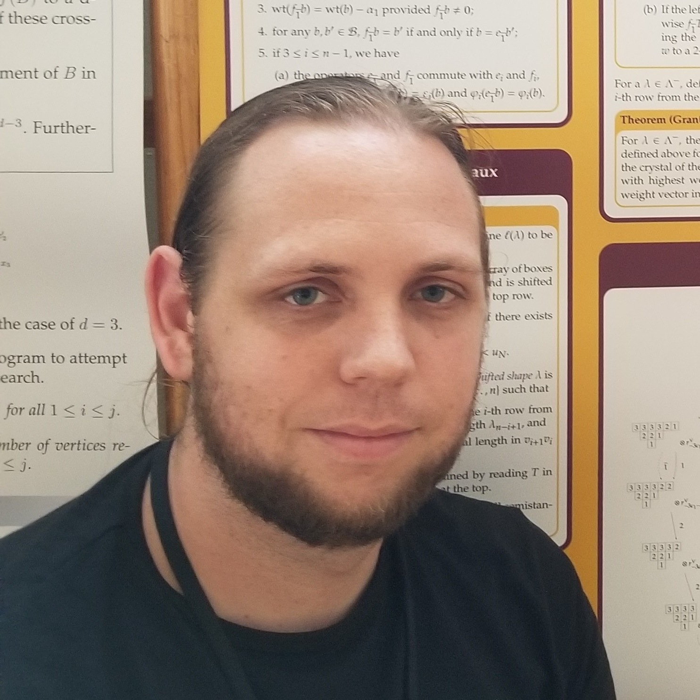

About me
I am currently an associate professor (准教授) at Hokkaido University (北海道大学) in the Department of Mathematics (数学部門) within the Faculty of Science (大学院理学研究院). I received my Ph.D. in Mathematics from University of California, Davis in 2015 under the guidance of Anne Schilling. From 2015 to 2017, I was an RTG Postdoctoral Associate as part of the combinatorics group at the University of Minnesota, specifically under the mentorship of Pavlo Pylyavskyy. From 2017 to 2019, I was a Postdoctoral Research Fellow at The University of Queensland under the mentorship of Ole Warnaar. From 2019 to 2021, I was a lecturer at The University of Queensland. From 2021 to 2022, I was a JSPS Standard Postdoc located at OCAMI (数学研究所) within Osaka Metropolitan University (大阪公立大学) and hosted by Masato Okado.
Research
My primary research interests are in combinatorics and representation theory, specifically in the area of crystals and (Kac–Moody) Lie algebras. One major area of my research focuses on a specific class of finite dimensional representations and their corresponding crystals for affine Lie algebras called Kirillov–Reshetikhin (KR) modules and KR crystals. There is a (conjectural) bijection between tensor products of KR crystals and combinatorial objects called rigged configurations, which arose from statistical mechanics and has led to applications in soliton cellular automata, a generalization of the box-ball system. In particular, this gives a (combinatorial) proof of the \(X = M\) conjecture. Characters of tensor products of KR crystals also have deep connections with other areas of mathematics, including (non)symmetric Macdonald polynomials and Q-systems. Ben Salisbury and I have also generalized rigged configurations to be a model for highest weight crystals, where they appear to be a very natural model.
My more recent interests have been about exploring the relationship between (combinatorial) representation theory, solvable lattice models and probability theory. More specifically, I have been studying stochastic processes such as TASEP on a ring and a line and exploring the relationship with K-theoretic symmetric functions and KR crystals. I have additional interests in combinatorial Hopf algebras, which includes symmetric functions, Coxeter and Artin groups, and Hecke algebras.
For more information, see my research page. Here is my publication list.
Other stuff
I am co-organizing FPSAC 2025 (main FPSAC website page) with Kyouko Kimura, Nanao Kita, Tomoo Matsumura, and Yasuhide Numata.
I am co-organizing the PACSeminar (日本語) with Hideya Watanabe.
I have been a developer for the open-source mathematical software SageMath since 2010 and have been programming in various languages (C, C++, C#, Java, Python, etc.) since 2001. For books on SageMath, see Computational mathematics with SageMath (also available from a traditional publisher) and Gregory Bard's book.